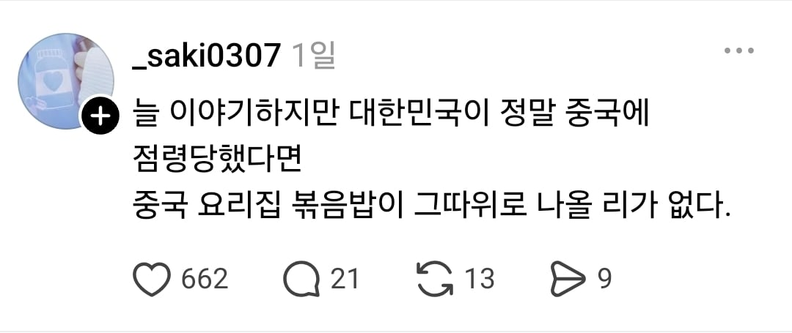

오...

오...
근데 볶음밥인데 찰지게 나오는 집들은 진쩌
너흰 개쓰레기 음식만 먹어해
먹히면 천안에 있는 천안문 중국식당부터 철거당함
그래서 요즘 마라탕집 볶음밥이 맛있더라
다 마라탕집 갔음 중국집은 껍데기야
중국인들은 반성하고 볶음밥퀄 상향하라. 중식당가면 중국인 직원 요리사들 엄청 많더구만.
? 중국인이 만들었는데도 그모양이면 그사람들 한국화된거아녀? ㅋㅋㅋㅋㅋㅋㅋㅋㅋㅋ 몸만 중국 정신은 한국인됐나?ㅋㅋㅋ
그정도면 중국인이 아니라 조선족이겠다
조선족도 중국인이니 대륙의 볶음밥퀄을 보장하라!
아씨 먹혔으면 산둥성출신 주방장부터 보급하라고
술집거리에 ㄹㅇ 중국인이 하는 중국집 갔는데 맛이 존나 다르긴하더라 ㅋㅋ
볶음밥을 시켰는데 안볶은밥이 나오는게 중국 그 자체 아님? 폭탄 빼고 다 폭발하는곳이 중국이잖아
나스닥말좆양봉호로맞말 ㅇㅈ
요즘 쓰레기 많더라
ㅇㄱㄹㅇ
ㄹㅇ 우리나라 점령하고 싶으면 기름범벅밥부터 없애보라고 ㅋㅋㅋ
헤이헤이헤이
진짜 요즘 중국집 음식 퀄리티 너무함
하아 그래서 중국집 요새 레스토랑 형식으로 하는데만 가는데 그런데가 맛있더라 ㅜ
마라탕 집 볶음밥 잘함
중국 현지음식 대부분 내 입맛에 별론데 볶음밥 꿔바로우는 진심이더라
병신 식민지 버러지들이 먹는 음식을 본토랑 같은급으로 주겠냐??
하수구기름으로 볶은 밥 먹는 수가 있다
계란볶음밥 권위자 선생님의 가르침을 받아야..
마라탕 집이 볶음밥 더 잘함
옛날엔 중국음식 먹으려면 중국집 갔지만 이제 중국음식 먹고싶으면 양꼬치나 마라탕집 가야함
마라탕집은 안가서 모르겠고
양꼬치집이 볶음밥 더 잘함
요즘 짜장도 짜파게티보다 못한 곳 존나 많어
양꼬치집 중식이 그렇게 맛있는.이유가
양꼬치집에 가있음
즉, 볶음밥을 잘하는 중화요리사는 중국인이다.
이연복은 화교다.
오?
오죽하면 중국인이 운영하는 양꼬치 집에서 시키라더라
진짜 중국집 볶음밥 수준 너무 심각함
차라리 내가 해먹음
한문 써있는곳 가면 잘함
먹히기 직전임
아....
일단 중식당중 '천안문'은 죄다 상호변경 들어가야람
하
마오주석님 아들살아계실적엔 이런일 없었는데
그냥 마트 볶음밥 볶아서 내놓는게 나을지경
오래한 중국집 주방장들 그만두면 이제 어디서 중식 사먹어야 할지 모르겠음
한식파는 곳이 직원들 갈아서 그런 퀄리티 나오는 것처럼 중국에서 파는 중식도 그렇게 사람 갈아 나오는거 아님?
제대로 된 볶음밥을 먹으려면 중국집이 아니라 개인이 하는 중국음식 집에 해야 되더라.
사천년 역사의 중식은 어쩔 수 없지
마오안잉센세의 폭렬볶음밥이 정말 여럿이 먹다 죽어도 모를 맛인데
헉